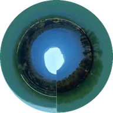

極座標

中心を軸にレイヤーを曲げ、直線を円に、円を直線に変換します。配置で、レイヤーのどの辺が中心に集まるかを選びます。
設定
| 設定項目 | 種類 | 範囲 | デフォルト |
|---|---|---|---|
| 補間 | 数値 | 0%〜100% | 100% |
| 種類 | 選択 | 直交座標から極座標、極座標から直交座標 | 直交座標から極座標 |
| 配置 | 選択 | 上端を中心に、下端を中心に | 上端を中心に |
| 半径 | 数値 | 0〜4 | 0 |
| 角度 | 角度 | -3600°〜3600° | 0° |
| スケール | 数値 | 0.01〜10 | 1 |
| 繰り返し | 数値 | 0〜100 | 1 |
| ミラー | オン／オフ | – | オフ |
| スタイル | 選択 | クラシック、標準 | クラシック |